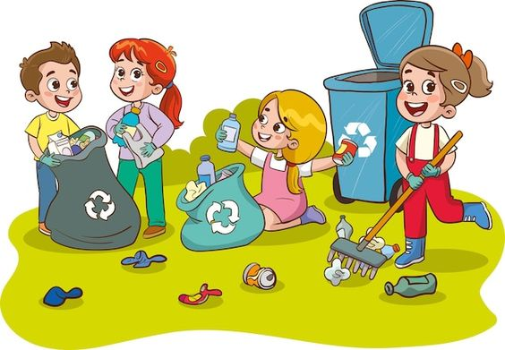
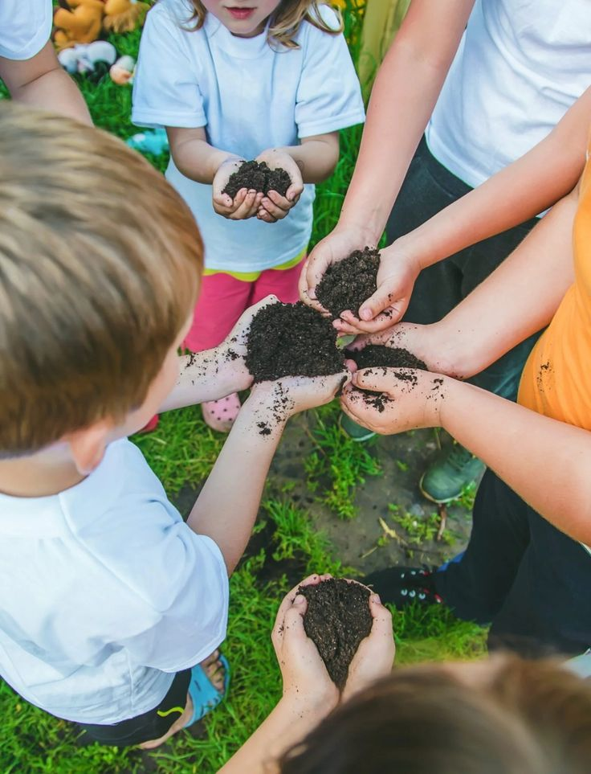
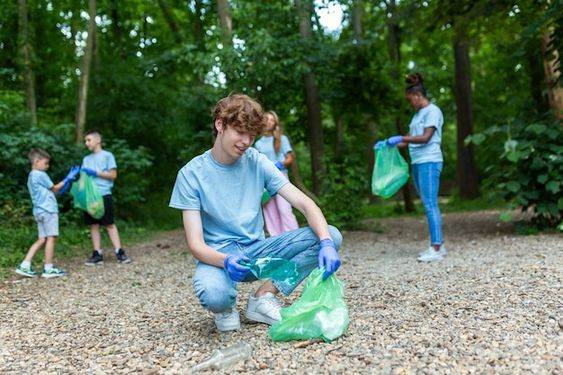

¡Bienvenidos a "Pequeños Guardianes del Planeta"! Este blog está dedicado a inspirar y educar a niños y
familias sobre la importancia de cuidar nuestro planeta. Aquí encontrarás recursos, actividades y consejos
prácticos para enseñar a los más pequeños sobre la ecología y el reciclaje de una manera divertida y
accesible.

La educación ambiental para los niños es fundamental en la creación de una sociedad más consciente y
responsable con el medio ambiente. A medida que enfrentamos desafíos globales como el cambio climático, la
pérdida de biodiversidad y la contaminación, es crucial que las generaciones más jóvenes comprendan la
importancia de proteger y preservar nuestro planeta. Este artículo explora por qué es esencial educar a los
niños sobre el medio ambiente, cómo se puede hacer de manera efectiva y los beneficios a largo plazo de una
educación ambiental integral.
¿Por Qué es Importante la Educación Ambiental para los Niños?
Conciencia Temprana:
Los niños son increíblemente receptivos y curiosos. Introducir conceptos ambientales desde una edad
temprana puede fomentar un sentido de responsabilidad y conexión con la naturaleza.
La conciencia temprana ayuda a desarrollar hábitos sostenibles que pueden durar toda la vida, como
reciclar, conservar agua y energía, y respetar la biodiversidad.
Desarrollo de Valores:
La educación ambiental inculca valores fundamentales como el respeto, la responsabilidad y la
cooperación. Estos valores no solo son esenciales para la protección del medio ambiente, sino también
para el desarrollo personal y social de los niños.
Aprender sobre la interdependencia de los ecosistemas y la importancia de cada ser vivo puede
desarrollar empatía y respeto hacia todas las formas de vida.
Preparación para el Futuro:
Los problemas ambientales actuales y futuros requerirán soluciones innovadoras. Educar a los niños sobre
estos desafíos prepara a la próxima generación para abordar y resolver problemas ambientales con
creatividad
y conocimiento.
La educación ambiental también puede inspirar a los niños a seguir carreras en campos relacionados con
la ciencia, la tecnología, la ingeniería y las matemáticas (STEM), que son cruciales para la
sostenibilidad futura.
Estrategias para Educar a los Niños sobre el Medio Ambiente

Incorporación en el Currículo Escolar:
Integrar la educación ambiental en el currículo escolar asegura que todos los niños tengan acceso a este
conocimiento esencial.
Los temas ambientales pueden ser incluidos en materias como ciencias, geografía y estudios sociales,
proporcionando una visión holística del impacto humano en la naturaleza.
Aprendizaje Práctico:
Las actividades prácticas y experimentales son muy efectivas para enseñar conceptos
ambientales. Proyectos de ciencias, excursiones a parques naturales y actividades de jardinería son
ejemplos
de cómo se puede hacer.
Estas actividades permiten a los niños ver de primera mano cómo funcionan los ecosistemas y la
importancia de su conservación.
Uso de Recursos Multimedia:
Los recursos multimedia, como videos educativos, aplicaciones y juegos interactivos, pueden hacer que el
aprendizaje ambiental sea más atractivo y accesible.
Documentales y programas de televisión sobre naturaleza pueden complementar la educación formal y
despertar el interés de los niños por el medio ambiente.
Participación de la Comunidad:
Involucrar a la comunidad local en la educación ambiental puede proporcionar a los niños un sentido de
pertenencia y responsabilidad hacia su entorno.
Programas de voluntariado, limpiezas comunitarias y proyectos de conservación pueden ser excelentes
maneras de involucrar a los niños y sus familias en actividades ecológicas.
Fomento de la Curiosidad Natural:
Los niños son naturalmente curiosos. Fomentar esta curiosidad puede ser una forma poderosa de enseñar
sobre el medio ambiente.
Animar a los niños a explorar la naturaleza, hacer preguntas y buscar respuestas puede desarrollar una
mentalidad inquisitiva y científica.
Beneficios a Largo Plazo de la Educación Ambiental

Ciudadanos Responsables:
Los niños educados en temas ambientales tienden a convertirse en adultos responsables y conscientes de
su impacto en el planeta.
Estos individuos son más propensos a adoptar estilos de vida sostenibles y a influir positivamente en
sus comunidades.
Salud Mental y Física:
El contacto regular con la naturaleza tiene beneficios comprobados para la salud mental y física de los
niños, incluyendo la reducción del estrés, la mejora de la concentración y el aumento de la actividad
física.
La educación ambiental puede fomentar un amor por las actividades al aire libre, promoviendo un estilo
de vida más saludable.
Innovación y Sostenibilidad:
Al educar a los niños sobre los desafíos ambientales, se les prepara para desarrollar soluciones
innovadoras en el futuro.
La educación ambiental puede inspirar a los futuros líderes, científicos, ingenieros y activistas que
trabajarán por un planeta más sostenible.
La educación ambiental para los niños es una inversión crucial en el futuro de nuestro planeta. Al inculcar
valores ecológicos y conocimientos prácticos desde una edad temprana, estamos preparando a las generaciones
futuras para enfrentar y resolver los desafíos ambientales con creatividad, responsabilidad y compromiso.
Implementar estrategias efectivas de educación ambiental en las escuelas, en el hogar y en la comunidad
puede tener un impacto duradero y positivo, creando un mundo más sostenible para todos.